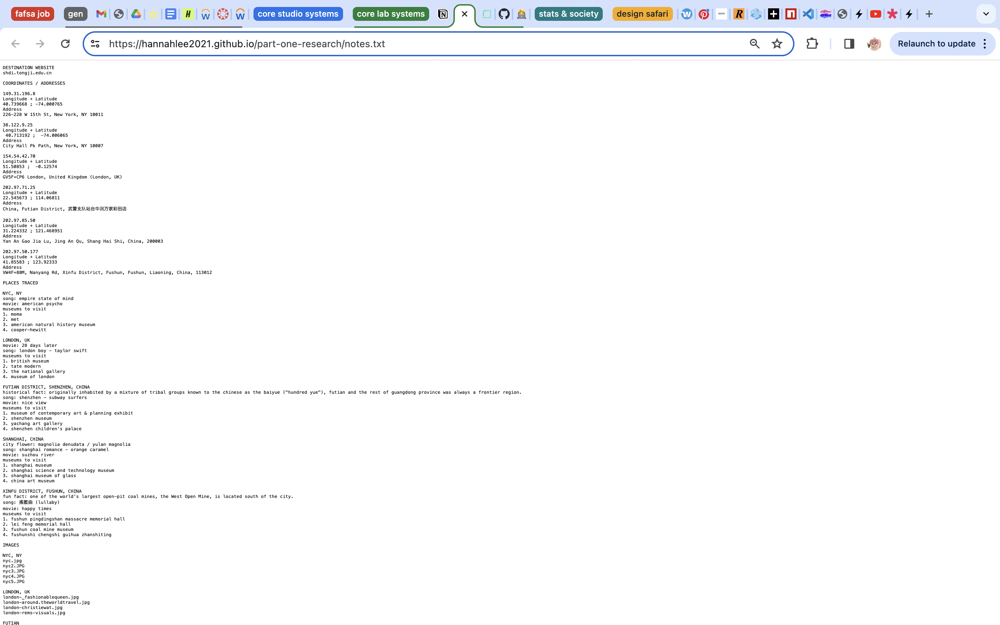
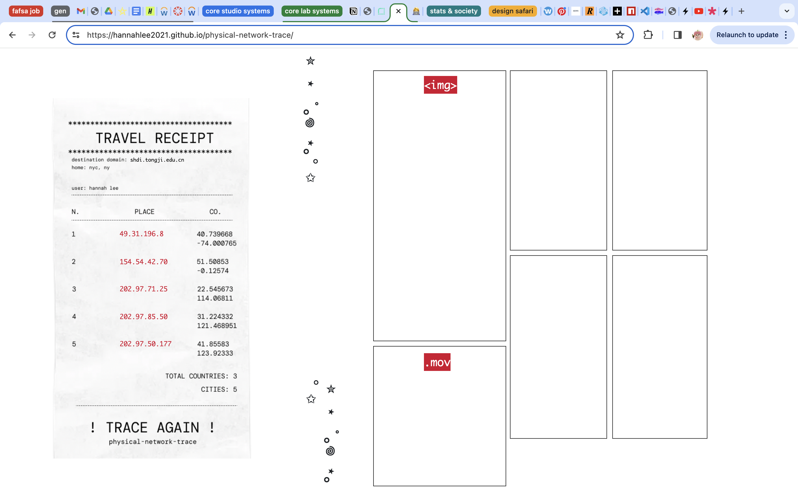
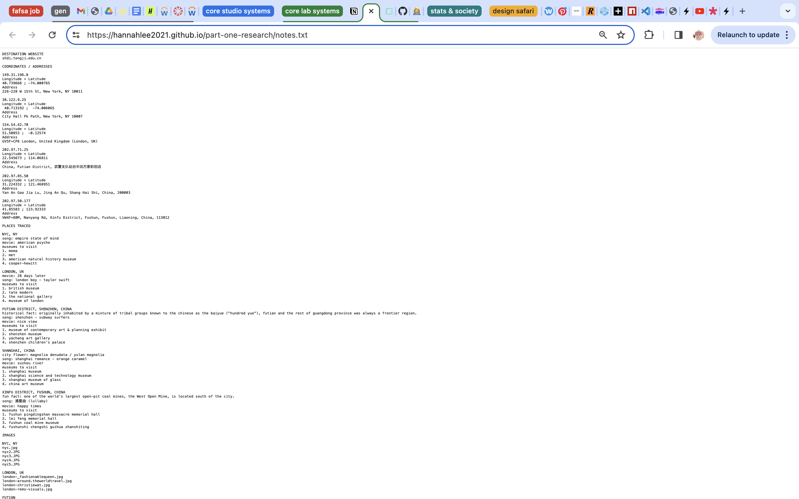
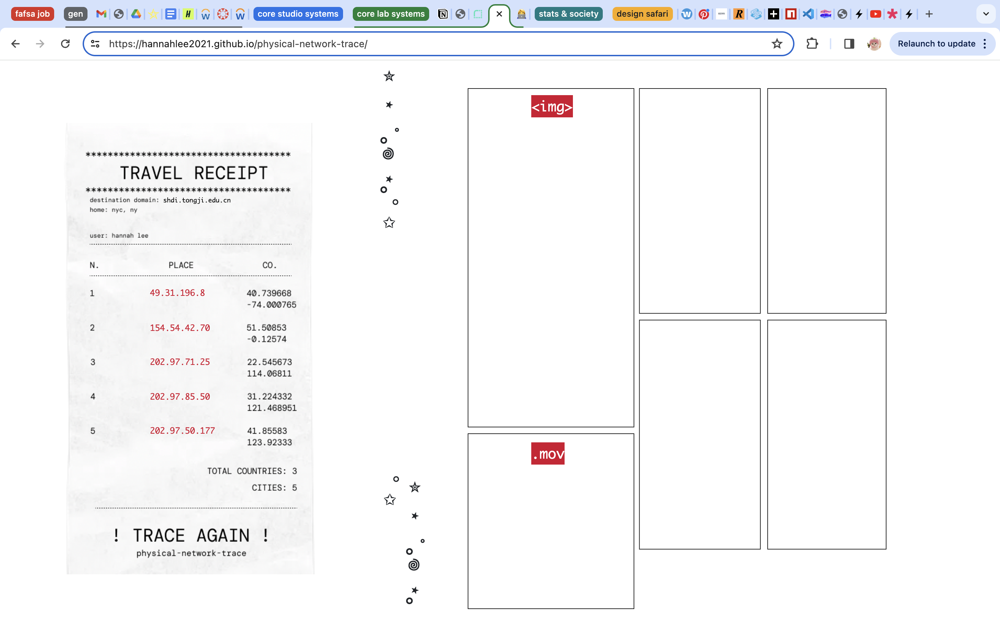

OVERVIEW
what is it?
a web based collage of different locations based on the traces ip addresses from nyc to tongji university in shanghai
intent
to visualize the route of a network request between a client and server in a way that is interactive and serves to portray different locations
DESIGN
for the layout, i was inspired by the form of a receipt, where information of a singular product is portrayed side by side and then the culmination of the order is listed at the bottom. the tracing of a network also seems similar to creating a travel itinerary, and so i wanted to follow that spirit in creating the design for this work.
BUILD
 





REFLECTION
design
i initially started off with a different idea, which was creating a linear map stretched across the screen, but while scrolling on pinterest as per my usual routine, i found a few images (in the moodboard of the figma file) that sort of sparked inspiration in me to change up my idea. having familiarity with figma now, it was pretty simple creating the assets and putting together the vision i had in mind. i did have some issues with deciding how the music file should be laid out, making a lot of tweaks throughout the design process, but overall, i am glad with the solution i ended up with!
build
integrating the flexboxes to fit the design i created was a bit of a challenge at first, due to not having too much familiarity with it, but the more i practiced, the more comfortable i became and so i am proud to say that i am now quite comfortable with utalizing flexboxes! in addition, creating the javascript event in which when each ip address is pressed, it displays the assigned asset and then gets removed when pressed again, was a challenge as well. i went through a few iterations on my approach to this, but i ended up going with using event handlers. and well, formatting the other elements and whatnot was quite repetitive but also very relaxing and fun!
conclusion
i am proud of myself for being able to debug the issues i had as well as being able to materialize my vision into a reality! i also learned what network traces were and so that was really exciting!